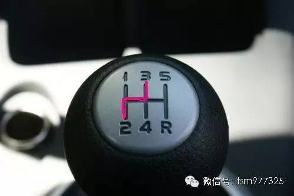
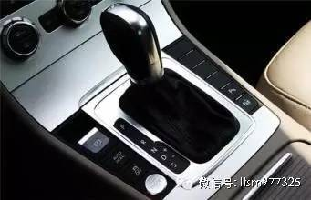
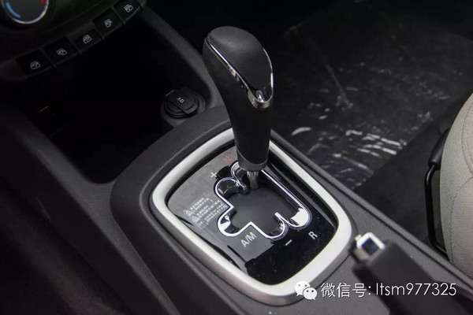
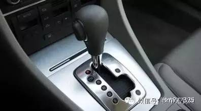
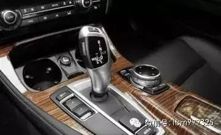
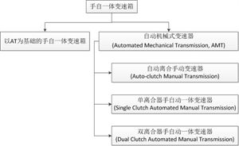

汽车三大件指的是变速箱、发动机和底盘悬挂，一般的车辆好不好开，是运动还是舒适，都是由这三大件决定的，今天我们就来了解下三大件中的变速箱吧。
一、手动变速箱（MT，Manual Transmission）

手动变速箱换挡需要踩下离合器，拨动档杆，抬起离合器完成换挡。对于新手司机来说，换挡过程比较复杂，容易熄火，换挡过早会挂不上档或抖动，换挡过晚会费油。但是对于可以熟练运用手动变速箱的司机，手动变速箱省油，操控感强，在加速、超车时比自动变速车快，具有驾驶乐趣。好的手动变速箱应具有档位行程短，入档时有吸入感等感觉。
二、自动挡（AT，Automatic Transmission）
利用行星齿轮机构进行变速，它能根据油门踏板程度和车速变化，自动地进行变速。而驾驶者只需操纵加速踏板控制车速即可。

自动挡相对手动挡来说，操作便捷，在行驶途中一般不用进行更换档位操作，但是传动效率有所损失，导致比起手动挡燃油消耗量高。自动变速箱好不好用的重点是档位个数和换挡逻辑，比如早先的车型普遍是4AT，现在比较普遍的是6AT、7AT、8AT、9AT等，但并不是档位越多越好，还要看换挡逻辑。换挡逻辑指的是变速箱制造者设定的换挡时机，这个时机与发动机转速、油门踩踏程度、车速等有关。好的自动变速箱，换挡灵敏，逻辑合理，可以跑出很好的油耗成绩。
自动变速箱能够大大减少手动换档对汽车传动系的冲击，从而延长汽车的使用寿命，提高乘坐舒适性。它能够根据路面状况选择适当的档位，使发动机工作于最佳状况。对于经常穿梭于复杂路况的轿车，它可以使司机不必踏离合器进行频繁换档，因此可以降低司机的劳动强度。
三、机械式自动变速箱（AMT，Automated Mechanical Transmission）

机械式自动变速箱相当于加了控制电脑的手动变速箱，一般为5速，没有D挡和P挡。相比于手动变速箱它操作简单，类似于自动挡；相对于自动挡，它又有着较高的传动效率，跑起来比较省油。它的缺点是行驶中顿挫感强烈，舒适性较低，常见于国产低端车型，原因是技术简单、制造成本低。
结构上可以理解成在一台手动变速箱基础上增加了液压机构操纵的离合器和换档拨叉，以取代人手和脚，实现自动换档。
AMT在机械变速器（手动波）原有基础上进行改造，主要改变手动换档操纵部分。即在总体传动结构不变的情况下通过加装微机控制的自动操纵系统来实现换挡的自动化。因此AMT实际上是由一个机器人系统来完成操作离合器和选档的两个动作。由于AMT能在现生产的手动波基础上进行改造，生产继承性好，投入的责用也较低，容易被生产厂接受。AMT的核心技术是微机控制，电子技术及质量将直接决定AMT的性能与运行质量。
automated指的是换挡时左脚踩离合踏板这个东西被自动化了，没有离合踏板。只有踩离合这一动作被自动化，其他操作都是人工进行的。
AMT是半自动变速箱，它是没有离合踏板的，换挡时与AT一样，车子停稳后踩住刹车直接拨档杆就行。实际上AMT变速箱就是在手动的基础上加装了一个电动换挡机械，来帮助驾驶员进行换挡操作，驾驶的感觉上跟手动挡差不多，顿挫感比较明显，与AT变速箱有很大差异，AMT正常工作状态下是1800-2200转进行换挡，运动模式下则是2500-3000转换挡。AMT变速箱一共有R、N、D、A/E、+/-，五个档位，与AT的区别是没有驻车档P档，所以AMT在驻车的时候必须拉手刹。
不过值得注意的是，AMT自动变速箱电控换挡或离合部分比较容易损坏，一旦损坏，维修费用是不便宜的。
四、无级变速箱（CVT，Continuously Variable Transmission），直接翻译就是连续可变传动。

无级变速器可以实现传动比的连续改变，从而得到传动系与发动机工况的最佳匹配。它的特点是平顺性好，无顿挫感，驾驶舒适感强。缺点是承受扭力的能力较差，对于速度变化反应较慢。还有的朋友可能会问：“既然无级那为什么还会有手动档位。”那是因为无级变速箱的手动档位是通过电子信号进行模拟的，类似于电子限速。现在装配无级变速箱的车辆很多，以日系车为主，但是像奥迪A4L、A6L也有装备，主要就是为了舒适。
CVT是纯无级变速箱，它的内部是没有齿轮，靠一条钢板的韧度进行动力的提高，它的原理有点像踏板摩托车。由于没有齿轮的齿深，所以动力损失非常小，铸就了CVT变速箱非常的省油。目前比较有名的大公司都在主推CVT变速箱，如丰田的爱信、日产的杰特科。
CVT采用传动带和可变槽宽的棘轮进行动力传递，即当棘轮变化槽宽肘，相应改变驱动轮与从动轮上传动带的接触半径进行变速，传动带一般用橡胶带、金属带和金属链等。CVT是真正无级化了，它的优点是重量轻，体积小，零件少，与AT比较具有较高的运行效率，油耗较低。但CVT的缺点也是明显的，就是传动带很容易损坏，不能承受较大的载荷，只能限用于在1升排量左右的低功率和低扭矩汽车，因此在自动变速器占有率约4%以下。
给CVT加入手动功能的原因和给其他自动变速箱加入手动功能的原因是一样的：因为日常使用中有一些情况需要手动介入，比如：爬坡时为了更大的扭矩希望用低档位高转速；超车时为了获得更好的加速性能需要降档或保持档位不变等等。对纯自动变速箱的车，驾驶员很难有效地把爬坡、超车这些意图传递给车辆(也有一些办法，比如kick down)。相信大家都有过类似的体会，比如想超车的时候踩油门但变速箱却自动升档，车速提高很慢，加速有很大的延迟。 这时，就需要手动介入。 第二，怎么实现？前面已经说了，CVT的机械结构里根本不存在"档位"，所以CVT手自一体的档位完全是靠软件实现的，即在连续可变的传动比范围内通过程序控制人为设置几个"档位"。
五、双离合变速箱（DCT，Dual Clutch Transmission）

基于手动变速器。由于电控系统和液压系统的存在，双离合器变速箱的效率仍然不及传统手动变速箱，特别是用于传递大扭矩的湿式双离合器变速箱更是如此。
有两个离合器，其中一个负责奇数档（1、3、5、7挡），另一个离合器负责偶数档（2、4、6挡）。可以想象为将两台手动变速箱的功能合二为一，并建立在单一的系统内，它没有液力变矩器也没有行星齿轮组。从齿轮部分乍一看很像一台手动变速器，因为它有同步器，但不同的是它用“双”离合器控制与发动机动力的通断，这两台自动控制的离合器，由电子控制及液压推动，能同时控制两组离合器的运作（一组啮合，一组分离状态下的预选）。
DSG的传动轴被分为两条，一条是放于内里实心的传动轴，而另一条则是外面空心的传动轴；内里实心的传动轴连接了1、3、5 及倒挡，而外面空心的传动轴则连接2、4及6挡，两具离合器各自负责一条传动轴的啮合动作，引擎动力便会由其中一条传动轴作出无间断的传送。
DCT其实是一个统称，像大众的DSG、福特的powershift、奥迪的Stronic、保时捷的PDK都是双离合变速器，它们大同小异。双离合变速器换挡迅速，燃油经济性高，能承受较大扭矩，现在已经广泛用于汽车领域，上至布加迪、柯尼塞克等超跑，下至比亚迪等国产车辆均有装备。但是双离合生产成本较高，各家的调校也有区别，具体操作时可能会出现顿挫等现象。前两年闹得比较大的大众DSG召回也是DCT变速箱的缺点之一，就是换挡频繁容易导致变速箱中的一些模块温度过高导致失灵损坏，不过近年来这个问题已经得到了改进。
在进行换挡操作前，一组离合器便已预先咬合下一挡位的齿轮，在另一组离合器咬合现行挡位齿轮后，便可立即承接下一挡位，达到几近无间隙的换挡速度。
六、手自一体变速器（Tiptronic）
手自一体变速箱就是为了提高自动变速箱的经济性和操控性而增加的设置，让原来电脑自动决定的换挡时机重新回到驾驶员手中。同时，如果在城市内堵车情况下，还是可以随时使用自动挡以便使自己轻松。
手自一体变速器由德国保时捷车厂在911车型上首先推出，称为Tiptronic，它可使高性能跑车不必受限于传统的自动挡束缚，让驾驶者也能享受手动换挡的乐趣。此型车在其挡位上设有“+”、“-”选择挡位。在D挡时，可自由变换降挡（-）或加挡（+），如同手动挡一样。
驾驶者可以在入弯前像手动挡般地强迫降挡减速，出弯时可以低中挡加油出弯。 现在的自动挡车的方向盘上又增加了“+”、“-”换挡按钮，驾驶者就能手不离开方向盘加减挡。
手自一体变速箱实际上还是自动变速箱的一种，通过电控系统模拟出手动变速箱的操作。保时捷Tiptronic顺序升降挡系统是变速箱管理系统，是软件而不是硬件。它的出现，在操作上给予驾驶者更大的自由度，就是可以自由选择自己认为合适的挡位和换挡时机，大大提高了驾驶乐趣。
自动挡车，只有一种自动模式，手自一体的是变速箱既有手动模式也有自动模式，可以根据自己的需要进行转换。自动模式和普通的自动挡车没有多大区别，但手动模式却和手挡车不同，现在手挡车大多是王子挡，而手自一体的却是一字挡，也就是挡把只能前后变换位置，把挡把向+的方向搬动一次，就升一个档位，再搬动一次，就再升一个档位，反之减挡就向-号的方向搬动就可以了，这和F1赛车的换挡是一样的，只不过赛车的档位在方向盘下，是通过手指来完成的，手自一体的变速箱更加方便，比如平路就可以选择自动模式驾驶，上坡的时候就可改为手动模式，加减档都很方便，便于行驶。
堵车时嫌麻烦就用自动，如果可以跑起来，尤其是在山区弯路上，手动模式的优势就会非常明显，极大的满足了驾驶者随心操控车辆的需要。同时，在城市内堵车时，为了省油，也可以使用手动模式。比如：使用2挡，发动机转速从1500-3500，那么车速就是从20-50公里/小时之间变化，这个时候就完全可以用油门控制车速而不需要经常踩刹车（因为踩刹车是把车辆的动能转化成热能，是非常费油的做法；而利用发动机来制动就省得多）。这就是为什么普通自动挡的车在堵车时刹车灯比开手动挡的亮的频繁得多。
手自一体变速器的含义就是变速器既有自动变速模式，又有手动变速模式。所以说，手自一体变速器是一个很广泛的定义，而且每个人的理解都不太一样。在我看来，手自一体变速箱主要有以下两类：
【1】以AT为基础的手自一体变速箱，即AT+电控系统。
这种手自一体变速箱首先是一款AT。AT实际上是液力变矩器+行星齿轮排的变速箱。AT的最大特点是没有离合器，取而代之的是液力变矩器。AT的特点是换挡无动力中断。对驾驶者来说，您只需要以不同力度踩住踏板，变速箱就可以自动进行挡位升降。由于液力变矩器自动变速变矩范围不够大，因此在涡轮后面再串联几排行星齿轮提高效率，液压操纵系统会随发动机工作变化自行操纵行星齿轮，从而实现自动变速变矩。
而以AT为基础的手自一体变速箱是在AT的基础上加装了电控系统，这个电控系统是什么作用呢？作用是模拟出手动变速箱的操作，使得驾驶者可以手动进行加、减档。而当驾驶者不想管加、减档时，AT就发挥它的作用，自动进行加、减档。换句话说，这种手自一体变速箱的自动模式就是AT的模式，手动模式就是利用电控系统模拟手动换挡操作，根据驾驶员的加、减档意图进行强制加、减档。譬如保时捷、奥迪所选装的Tiptronic系统、宝马Steptronic系统及阿尔法罗米欧选用的Q系统都属于这一类。
【2】AMT
这种手自一体变速器应该是大多数人认为的手自一体变速器吧。AMT到底是什么呢？实际上，广义的AMT叫做自动机械式变速器(Automated Mechanical Transmission, AMT)，它包含三种变速器，都是手自一体变速器：
(1)自动离合手动变速器(Auto-clutch Manual Transmission)。这种变速器实际上是手动变速器，换挡结构也是手动的，只不过离合器受电机控制。电机受电控单元（ECU）控制。当传感器检测到驾驶员的换挡意图后，ECU给电机发出指令，控制电机自动接合离合器。所以，这种变速器只有离合器是自动的，不需要人去踩，换挡还是纯手动的，变速箱结构也是传统的手动变速器。这种AMT本身就是一种手自一体变速器。譬如雷诺的Easy System、萨博的Sensonic、菲亚特的Seicento城市自动系统。
(2)单离合器手自动一体变速器(Single Clutch Automated Manual Transmission)。这是比较常见的一种AMT了。这种AMT的基础仍是传统手动变速箱，其工作原理其实很简单，车辆在起步和换挡时，离合器由液压泵控制分离和接合，挡位转换也由液压结构操作。驾驶者只需要推拉排挡杆即可完成升、降挡，自动模式下变速箱控制电脑会根据车速、发动机负荷等数据自行切换挡位。从而获得优良的燃油经济性与动力性能以及平稳起步与迅速换档的能力，以达到驾驶员所期望的结果。目前，国内市场销售的搭载这种AMT的车型以小型或微型车为主，主要包括奇瑞QQ、奇瑞A1、瑞麒M1、长安奔奔Mini、哈飞路宝、江淮同悦、昌河铃木北斗星、风行景逸、MG3、上海通用雪佛兰赛欧和进口的Smart fortwo。
(3)双离合器手自动一体变速器(Dual Clutch Automated Manual Transmission)。这就是常说的DCT了。广义上DCT也属于AMT了，只不过有两个离合器。这种离合器的工作原理也很简单，车辆在起步和换挡时，两个离合器由液压泵分别控制分离与结合，挡位转换也由液压结构操作。驾驶者只需要推拉排挡杆即可完成升、降挡，自动模式下变速箱控制电脑会根据车速、发动机负荷等数据自行切换挡位。这种变速器的优点就是反应迅速了。大众、福特、菲亚特上都有DCT的运用。
以上就是我理解的手自一体变速器了，最后用一张图总结：
总结
MT就是完全需要靠离合、变速杆手动配合换挡的变速箱。
AMT变速箱介于手动挡跟自动挡之间的一种变速器，AMT就是加了离合器自动控制系统的手动挡。机械原理与手动挡一样，变速原理依靠的是行车电脑。
AMT是电控离合手动变速箱，手自一体是可人工介入换挡的自动变速箱。AMT在大型公交车比较常见，轿车主要为MT、AT、CVT、DCT。
其它的自动档变速箱，无论是AT、双离合还是CVT无级变速，都可以加装档位手动加减系统（厂家设计层面的加装，一般用户不可后期加装）。
所有能手动操作加减档的非MT变速箱，都可以称为手自一体。
另外，不同的变速箱，档位变换时车速的变化舒适度，是不同的。（除MT，说的都是自动模式下的情况）
MT，舒适度完全靠驾驶技术。
AMT，因为是电脑根据统计数据，和实时传感器采集的数据，进行计算后才决定换挡。所以经常能明显感觉到档位变换。
AT和双离合，都属于变速曲线比较平滑，没有多少顿挫感的变速箱。AT相对来说比较耗油。
CVT的速度变换是没有阶级的，是最平滑的。但是CVT的钢带强度相对齿轮要有限，不太适合过大马力的发动机，不太适合重的车子。
MT、AMT是结构简单的变速箱技术。AT都是发展很成熟的变速箱技术。双离合在技术上更高，是综合实力最好的变速箱技术。CVT也是技术很高的变速箱技术，日本车用得多，因为日本车相对较轻，适合用CVT。
MT有离合器踏板，AMT车基本上没有离合器踏板，其它自动档汽车更没有离合器踏板。所以，你想体会离合器、变速杆配合的驾驶乐趣，只能买MT变速箱的车。如果刚开上车，还是建议使用自动档汽车。先适应了道路驾驶，再回头找驾驶乐趣。不然刚上路了，紧张之余，还有手脚配合，一不小心在繁忙的路段熄火，很累的。
如果是考虑油耗，好的手动模式操作是比自动模式省油。AT变速箱因为液力变矩器是软连接，会有一些没有输出到轮子的油耗。不过，一些新的AT技术，能够实现档位锁定，使软连接变成硬连接。
总结2
1 手动变速箱（MT，Manual Transmission）
完全需要靠离合、变速杆手动配合换挡的变速箱。
2 双离合变速箱（DCT，Dual Clutch Transmission）
双离合+双传动轴（空心套实心）+液压系统+电控系统（同时控制两组离合器的运作，一组啮合，一组分离状态下的预选）
3 机械式自动变速箱（AMT，Automated Mechanical Transmission）
Automated指的是换挡时左脚踩离合踏板这个东西被自动化了，没有离合踏板，其他操作都是人工进行。机械原理与手动挡一样，变速原理依靠的是行车电脑。AMT在大型公交车比较常见。
4 自动挡（AT，Automatic Transmission）
利用电控系统根据油门踏板程度和车速变化控制行星齿轮机构自动变速。
5 无级变速箱（CVT，Continuously Variable Transmission）
内部是没有齿轮，采用传动带和可变槽宽的棘轮进行动力传递，不能承受较大的载荷，只能限用于在1升排量左右的低功率和低扭矩汽车。
6 手自一体变速器（Tiptronic）
CVT和AT都可以通过电控系统加入手动功能，方便超车和爬坡操作；此型车在其挡位上设有“+”、“-”选择挡位。在D挡时，可自由变换降挡（-）或加挡（+），如同手动挡一样。
（注：AMT是电控离合手动变速箱，手自一体是可人工介入换挡的自动变速箱。）
大家在选车、用车过程中都要多加注意变速箱的种类特点，按照自己的需求选择合适的档位、模式进行使用，以免造成故障甚至引发事故。最后提醒大家，如果你的变速箱在使用手册中标明需要维护，那么请一定按照其标明的周期里程进行维护。